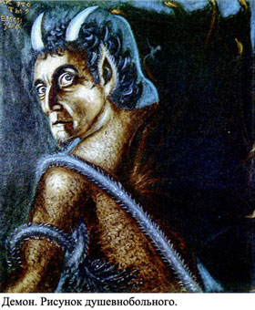
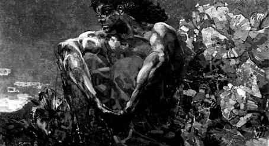

HATEFUL BRUXA, WARRAX
САТАНИНСКОЕ ИСКУССТВО:
АВТОРЫ И ПРОВОДНИКИ
Процесс создания произведения искусства обычно называется словом «творчество». Творить, творец... Творение, тварь... Параллель с божественной креативной функцией очевидна. Но насколько адекватно такое понимание и, собственно, употребление этого слова? Является ли творческий процесс созданием абсолютно нового, закреплением хаотических потенциальных вариантов в рамках творения, или же создание произведения искусства (будь то музыкальное произведение, картина, скульптура или что-нибудь ещё) — это лишь фиксация уже существующего образа, эйдоса, увиденного художником? Какое слово здесь более уместно — creatio или constructio? Наконец, отличается ли от человеческого искусства во всех его проявлениях — искусство сатанинское, и если да, то где проходит эта грань?
Грань эта проходит там, где заканчивается человек. Человек-художник нам неинтересен, пока он не переступит некую зыбкую границу. Можно обозначить её словом «одержимость», указывая на то, что автор в процессе создания произведения является проводником, инструментом неких Сил. Сатанинское искусство начинается там, где заканчивается акт человеческого творения, и художник, не питая амбициозных планов и идей, выражает не свои собственные человеческие мысли и чувства, а воплощает те образы, что рождены не полуобезьяньим мозгом, интуицией или разумом, а гораздо более древней Силой. Это действительно одержимость, и от конкретного случая зависит, добровольна она или нет. Это может быть осознано художником, это может и игнорироваться.
В творчестве душевнобольных, как и в их галлюцинациях, нередко можно встретить инфернальные мотивы (рис. 1). По всей видимости, это не связано с религиозными представлениями больных — и в период господства государственного атеизма психически больные люди упорно продолжали своё галлюцинаторное «общение» с некими демоническими сущностями. Психиатрия также с момента своего появления приняла в своё ведение случаи одержимости, которыми прежде занималась церковь. Речь идёт о том, что можно назвать «недобровольной», принудительной одержимостью — человек явно не справляется с тем, что проявляется через него, и в некоторых случаях речь идёт о полном подчинении человеческой личности той сущности, которая вызвала одержимость. Причины, по которым на роль «проводника» избирается тот или иной человек, неизвестны — возможно, выбирается тот, кто по каким-то своим качествам более подходит для этих функций. Не менее вероятно и то, что для этого надо обладать некоей особой чувствительностью, способностью воспринять то, что выходит за рамки человеческого.
Но есть и другой вариант, назовём его «добровольной» одержимостью. Сатанист, подчиняющий своё человеческое естество приходящему из Ада, стремится к тому, чтобы всё его внутреннее пространство было заполнено Тёмной сущностью, к тому, чтобы человеческое в личности было уничтожено; когда речь идёт об искусстве тех, кто стремится к подобным проявлениям, можно говорить, что произведения этого искусства являются прямыми проекциями действия Тьмы в этом мире. По сути любое произведение Black Art имеет ритуальный оттенок, и чем ближе автор к состоянию полной одержимости, т. е. чем менее человечно его искусство и чем более оно открыто в Бездну, тем сильнее эффект, производимый им.
Итак, речь уже идёт не о личном авторстве, не об акте «творения», но о том, что автор становится своеобразным проводником. Через него проявляется действие Сил Тьмы. В отдельных случаях это бессознательный процесс, сродни более бурным проявлениям — упомянутой выше одержимости психически больных; в таких случаях проводник-автор напоминает сосуд, вмещающий в себя что угодно. Пока он наполнен Тьмой, он служит Ей, но стоит ему опустеть — и он делается бесполезен. Безусловно, и через такого автора в мир может перейти что-то достойное. Но на его произведение практически не откладывается отпечаток его «личности», она не интересна и не имеет значения. Не его заслуга в том, что именно он был использован для этой роли, и не о нём стоит говорить в контексте авторства в Чёрном Искусстве.
Если же в искусстве проявляет себя тот, о котором можно сказать, что он является «добровольно» одержимым, возникает совершенно иная ситуация. Уникальное для каждого сатаниста единение с Тьмой, уникальность каждой сущности, проявленной в человеческой оболочке, создают неповторимость таких произведений. Каждый из таких авторов говорит на более близком ему языке — это может быть живопись, музыка, что-то другое — и выражает на нём то, для чего в человеческом языке не существует слов, то, что не подлежит вербализации. Уникальность каждого произведения Чёрного Искусства в том, что каждая по-настоящему принадлежащая Тьме сущность — уникальна, и, несмотря на то, что автор не «создаёт» новое, а лишь проецирует в существующий мир проявления Тьмы, создавая разрывы реальности, через которые проникает Хаос, каждое такое произведение уникально и неповторимо, поскольку уникальны и неповторимы все мгновения движения Хаоса.
Когда речь идёт о сатанинском искусстве, мы можем говорить о том, что произведение автора-сатаниста — это не столько плод его собственного воображения, сколько проекция мира инфернального, один из путей проникновения в «материальный мир» сил Хаоса. Такое произведение представляет ценность как инструмент, изменяющий и автора-проводника, и тех, кто воспринимает это произведение.
Чем глубже погружён автор в Бездну, из которой он черпает своё вдохновение, тем больше проявляется в его произведениях черт, общих с другими подобными авторами (что отнюдь не противоречит отмеченной выше уникальности каждого такого произведения). Например, нередко в Black Metal музыканты, не слышавшие произведений, а порой и не подозревающие о существовании друг друга, пишут весьма похожие риффы, что иногда вызывает упрёки в плагиате.
Тем не менее речь идёт отнюдь не о банальном воровстве идей, а, условно говоря, о настройке на одну волну, общем источнике, близости авторов к одному и тому же аспекту сил, с которыми они взаимодействуют. Чтобы понять этот механизм, достаточно обратить внимание на следующую тенденцию, появившуюся в последние годы: ряд музыкантов, обозначая на обложках своих альбомов авторство музыки и текстов, пишут не «music by...» и «lyrics by...», а «music through...», «lyrics through...», подчёркивая именно момент надличностности своего творчества.
Но всегда ли автор осознаёт свою роль инструмента Сил в процессе творчества? Можно утверждать, что подобное искусство существует очень давно, но далеко не все авторы понимали свою роль в нём — нередко они являлись (и являются) просто слепыми инструментами, орудиями, пусть и очень хорошими. Достаточно, к примеру, обратить внимание на ряд гравюр Доре, дающих образную иллюстрацию человеческого восприятия сил Ада. Безусловно, эти произведения показывают (в человеческом ключе и в расчёте на воздействие именно на человека) величие инфернального мира, внушая трепет и восхищение, но едва ли Доре, будучи религиозным человеком, ставил перед собой такую задачу. Таких примеров множество, некоторые из них будут рассмотрены в этой статье ниже, когда речь пойдёт о том, что можно назвать недобровольной одержимостью.
Но для начала следует остановиться на одержимости добровольной. В большинстве случаев истинная одержимость — это насильственное вторжение демонических сущностей (не следует трактовать их антропоцентрически!) в человеческую личность. Рассматривая же демоническое искусство, мы гораздо чаще будем сталкиваться именно с добровольной одержимостью, знаменующей собой союз в одном индивиде человека и Демона, избравшего его в качестве своего «рупора» либо призванного человеком. Строго говоря, речь здесь не может идти о каком-либо внешнем вторжении, внешнем воздействии, поскольку такой одержимый человек — это, безусловно, сатанист, суть которого — одновременно пребывание в Аду, единение с Адом и внутреннее присутствие Ада в нём.
Можно сказать, что в актах Чёрного Искусства это единение проявляется у таких сатанистов наиболее ярко и полно, и если автор-проводник действительно является одержимым, то именно в процессе творчества демоническая составляющая его личности доминирует практически абсолютно.
В случае же одержимости недобровольной автор-человек зачастую не только не помогает воплощающимся в нём силам проявиться вовне, но и стремится им помешать — что, впрочем, может работать и в пользу этих сил. Можно вспомнить Врубеля, преследуемого образом Демона в течение многих лет (что, в итоге, закончилось психиатрической лечебницей — частый исход в тех случаях, когда человеческая психика одержимого не способствует проявлению демонической сущности, но и не может успешно сопротивляться ей). Чтобы избавиться от преследовавшего его образа, Врубель пытался перенести его на холст, что приносило лишь временное облегчение — тем не менее, итог мы можем видеть на полотнах, изображающих фигуру Демона (рис. 2).
Многие музыканты также переживали что-то подобное, особенно широко известны случаи, когда люди говорили (и, видимо, не без оснований) о взаимоотношениях с силами Зла скрипачей. Можно вспомнить Тартини, которому во сне явился Дьявол и сыграл на скрипке произведение, которое Тартини записал, дав ему название «Дьявольские трели». Или ещё более яркий пример — Никколо Паганини (рис. 3).
 «Он одевал плохо, мешком сидящий фрак,
брал в руки скрипку и появлялся где-то в глубине сцены, делал несколько шагов
и останавливался. Осматривал зал. Зал осматривал его. Потом странной, дёрганой, как у куклы, походкой доходил до середины сцены, отрывисто кланялся,
принимал характерную изломанную позу с выставленной вперёд левой ногой и задранным левым плечом — и начинал играть. И люди слушали его ошеломлённо,
потому что его игра была идеальна, в том смысле, что именно такой многие, сами
того не зная, и ждали всю жизнь»; «на сцену выходит некто уродливый (в строго романтическом смысле этого слова — чёрный, нервный, худой, с блестящими
глазами и странными движениями). Человек не от мира сего. Но он берёт скрипку — и преображается. Он творит с ней, а вместе с ней и с нами, нечто невообразимое, живёт в звуке, в музыке, в игре — и это длится некоторое время, как
галлюцинация. А потом звук стихает — и он возвращается в своё тело, такой же,
как и прежде», — вот что писали о выступлениях
«Он одевал плохо, мешком сидящий фрак,
брал в руки скрипку и появлялся где-то в глубине сцены, делал несколько шагов
и останавливался. Осматривал зал. Зал осматривал его. Потом странной, дёрганой, как у куклы, походкой доходил до середины сцены, отрывисто кланялся,
принимал характерную изломанную позу с выставленной вперёд левой ногой и задранным левым плечом — и начинал играть. И люди слушали его ошеломлённо,
потому что его игра была идеальна, в том смысле, что именно такой многие, сами
того не зная, и ждали всю жизнь»; «на сцену выходит некто уродливый (в строго романтическом смысле этого слова — чёрный, нервный, худой, с блестящими
глазами и странными движениями). Человек не от мира сего. Но он берёт скрипку — и преображается. Он творит с ней, а вместе с ней и с нами, нечто невообразимое, живёт в звуке, в музыке, в игре — и это длится некоторое время, как
галлюцинация. А потом звук стихает — и он возвращается в своё тело, такой же,
как и прежде», — вот что писали о выступлениях
Несколько слов можно добавить к сказанному о музыке (до появления metal-музыки, конечно), упомянув о композиторах-романтиках с их тяготением к «мрачным» образам, иногда, как ни странно, создававших достаточно сильные по своему воздействию произведения — например, возьмём «Фантастическую симфонию» Берлиоза с её картиной шабаша, многочисленные «Пляски Смерти», отсылающие слушателя к средневековому мотиву dance macabre, «Мефисто-вальс» Листа. Отдельно можно отметить противоречивую фигуру Скрябина с его духовными метаниями, среди произведений которого существуют симфонические поэмы «Прометей», «Поэма Огня», «Поэма Экстаза», а так же поэмы для фортепиано: «Трагическая», «Сатаническая» и «К Пламени». Девятую сонату Скрябина называли «Чёрной Мессой», и сам он одобрял это название (музыка сонаты даёт к тому достаточно оснований).
Аналогичная ситуация существует и в других областях, к примеру, в киноискусстве. Одним из первых вспоминается фильм Романа Поланского «Ребёнок Розмари», который показал сатанизм в непривычном для зрителя ракурсе.
Также вспомним про не столь давнюю работу режиссёра — фильм «Девятые врата». Вне зависимости от того, каких мировоззренческих взглядов придерживается Р. Поланский (нам это достоверно не известно), фильм несёт не только прямую информацию — в частности, о бесплодности псевдосатанинских сект. В нём есть и другое: информация о том, что Путь — это прежде всего осознанность и ответственность, и, если сделать шаг в Бездну формально, ради земных благ, эфемерного «могущества на земле» и т. п.— то Пламя, выжигающее человека из сатаниста, испепелит наглеца целиком. Достойным же Ад оказывает помощь — но никогда в виде целеуказания; Ад всегда лишь открывает Врата, но не подталкивает к ним.
Фильмы, имеющие какое-либо отношение к Бездне, могут быть любого
жанра. Это могут быть фильмы ужасов — достаточно вспомнить «Восставших из
Ада». При всём выполнении законов жанра, каждая серия содержит очень точную
сентенцию: «Нас вызвали не руки, нас призвало желание»; «„Я не понимаю!..“ —
эта вечная песня человечества». Таким фильмом может быть и мистика, весьма
благообразная в плане зрительного ряда — рекомендуем всем фильм «Восемнадцатый ангел». Это могут быть и фильмы из серии «не для всех» — скажем,
«Крот» или «Святая гора» Алехандро Ходоровского. Содержание фильма может
не иметь никакого отношения к общепринятым в социуме формам выражения
Тьмы: в этом контексте можно отметить «Собачье сердце» — фильм, в основу которого была положена книга Булгакова; а чуть ли не документальный фильм
Безусловно, по силе воздействия на воспринимающего (слушателя, зрителя и так далее) и по результату гораздо сильнее и качественнее произведения именно осознавших себя авторов-сатанистов, не бросающихся в погоню за деньгами и за славой, творящих исключительно во благо Ада. Но каждое произведение, вносящее свою лепту в те процессы, которые приближают момент победы над богом, нужно, необходимо и заслуживает внимания ровно в той степени, в которой оно является произведением демоническим, сатанинским, приоткрывающим ещё одну брешь в ткани мира.
- Интересно, что когда эти цитаты после мелкой правки (были убраны слова «скрипка», «фрак» и т. д.) были показаны тому, кто присутствовал на выступлениях одной Black Metal группы, вокалист которой является классическим представителем «добровольно одержимых», у него не было и тени сомнения в том, что речь идёт об этой группе.
- Биографическо-художественный фильм про становление Миямото Мусаси, в главной роли — Тоширо Мифуне, что уже является рекомендацией.
- Интересно, что «Koyaansqatsi» присутствует и в списке фильмов, рекомендованных CoS к просмотру (опубликован в книге «Церковь Сатаны» Б. Бартон), хотя в нём нет ничего из того, что обычно ассоциируется с CoS как с организацией «приземлённого сатанизма».
- Следует заметить, что этот фильм — наглядная иллюстрация ограниченности восприятия — воспринимается большинством в меру своего понимания как «кино о любви», что является профанацией; «Ворон» — это манифестация Справедливого Воздаяния и Ледяной Мести, берущих начало во Тьме.